Interesting Facts about the Atlatl
There are still cultures that use atlatls (also known as spear throwers). In Australia, the aborigines use a type of spear thrower called a woomera. It consists of a long dart up to ten feet and a handle. Woomera handles are multifunctional, carved into a concave elongated shape used not only for throwing a spear, but also used to hold water, food/plants, or as a club for combat or a killing blow to a wounded animal.
Some were also equipped with a flint blade on the end of the handle. They are the Swiss army knives of the primitive world. In Australia the bow was not used, the hunters were so proficient with the woomera there really wasn’t a need.
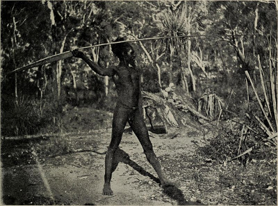
In the 16th century the Aztecs fought Cortez with atlatls powerful enough to pierce the Spanish armor. The oldest spear thrower found is 15,000 years old and was discovered in France. The oldest one found in North America is 8,000 years old. It was found in Nevada.
In the Pacific Northwest, which is where I live (the west side of Washington State), the atlatl is definitely less common than other parts of the country. In the 1950s, a wooden atlatl was dredged from the Skagit River. It is a very ornamental piece, with an animal form near the finger loops. The form is considered a sea monster that is half orca and half wolf or bear. These sea monsters are common in northwest tribal legends.
So, why would someone use an atlatl instead of just throwing the dart or spear? Well the simple answer is leverage. Using the spear thrower acts as an extension of one’s arm. It also provides a fulcrum (a pivot point). Both of these aspects will increase the throwing power of the individual, which increases the speed, force, and distance of the dart.
Atlatl Construction - General Information
I use the flora in my area to come up with my own construction techniques. I often replicate the work of ancient cultures from different areas of the country where the information and artifacts are more accessible.
The native wood types in the Pacific Northwest that work well in my opinion for making the spear thrower are any wood used to make bows, these include: Pacific Yew (Taxus brevifolia), Vine Maple (Acer circinatum), Beaked Hazel nut (Corylus cornuta), Bitter Cherry (Prunus emarginata), and Gary Oak (Quercus garryana), although any durable wood will work.
The dart can be harder to find and almost always the hole for a fore shaft needs to be drilled (however a foreshaft not required). The wood types that will work best for the dart are Ocean Spray (Holodiscus discolor), Red Osier Dogwood (Cornus sericea), Beaked Hazel (Corylus cornuta), Big Leaf Maple (Acer macrophyllum), Willow (Salix spp.), and Bitter Cherry (Prunus emarginata). My favorite nonnatives for the dart are bamboo (Bambusoideae). The species is not as important as the length, diameter, and spine of the dart. Some species have a segmented hollow center which can be used as the hole for the fore shaft.
The tools I like to use are all hand tools. I don’t have an issue with power tools (in fact I think they are great) but they are not always in the budget so it’s nice to become proficient with hand tools. The tools I use are as follows: wood rasps & files, a small planer, fine woodworking chisels, a fixed blade knife, 60 grit sandpaper, fine steel wool, and an antler or smooth stone.
There are many ways to make the spear thrower itself:
1. It can be as simple as a stick with a spur protruding on one end (spur from a branch that has been broken off the stick). The spur needs to point down towards the base of the stick.
2. Or, a stick with a Y at the end can be used (a piece of cordage is tied between the ends of the Y). The cordage acts as the spur.
3. My preferred method is to carve the spur into the spear thrower. You can carve an X on the top of the spear thrower. The top portion on the X will become the tip of the spur.
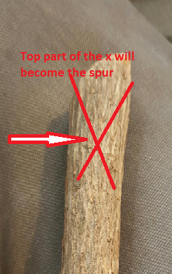
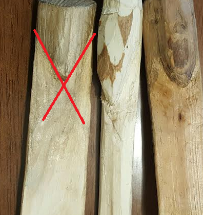
Spur examples
To make the atlatl aesthetically pleasing I use chisels. One does not need to carve the X, a simple V will do. At the tip of the V, I carve a loading groove. The loading groove is a U-shaped channel approximately three inches in length and a half an inch wide. When this element is added it is much easier to load the dart, and it make loading without looking possible.
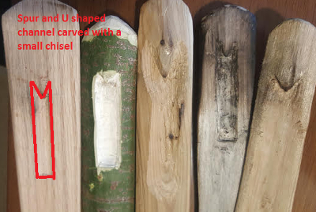
Examples of spurs with loading grooves
The length of the spear thrower is determined by the type of throwing I am attempting. For long distance throws a longer handle is required. For more accurate short distance throws a shorter handle is best, no shorter than 18 inches. The length that I think is best is right around 24 to 30 inches.
In width the spear thrower tapers down from about an inch and three quarters at the distal end to approximately three quarters of an inch wide at the handle. The thickness of the atlatl can vary but I like mine to be about one quarter of an inch, as I like to have some flex.
The dart can be much harder to attain. Finding straight shoots will help out in the long run. It’s important to use green wood (live). If the plant dies and the wood sits outside exposed to the elements over time it becomes brittle and will not work for the dart. Flexibility is important because the darts are dynamic. They undulate when thrown just like an arrow shot from a bow. The flex helps with flight stability.
The plants I mentioned before usually grow with nice straight pieces. I cut them, straighten them while green, then I bundle them together and let them sit in a controlled environment to season. I have heard the best time to harvest dart shafts or arrows is in the winter. At that point in the year the sap that is within the plant is near the base, so it takes less time to season properly. Also when the leaves have fallen it’s much easier to see though the forest and find the long straight shoots.
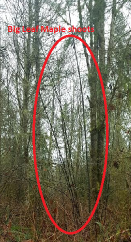
Bigleaf maple shoots for darts
After seasoning the darts for at least a couple of months, I disassemble the bundle and straighten again if needed. Now, just like an arrow, the fat end of the dart is where you would attach a point or foreshaft. If the skinny end is forward the dart will want to tumble in flight.
The way the atlatl is built will determine the type of nock you will put on the dart. Most of the atlatls that I make have a spur. A bowl shaped nock works best with a spur. The easiest way to accomplish this nock is to take the tip of a fixed blade knife and carefully carve it out. This can be quite dangerous if done while holding the dart with your hand! (Its much safer to brace the dart in a vice while carving).
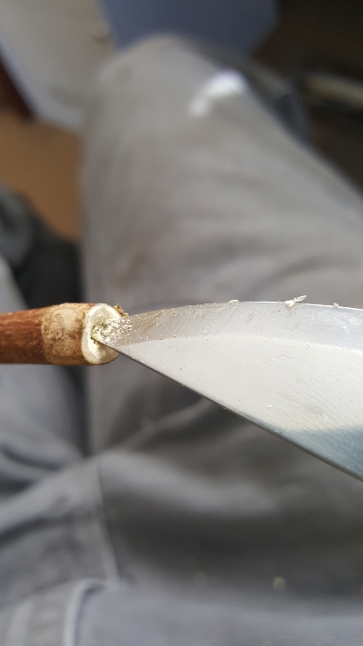
Carving out a nock
Often you will see a small worked stone attached to the back of the spear thrower. Although not necessary, the stone acts as a counter balance to the dart, without which aiming and throwing can be a bit more challenging. Because the dart is so long, and therefore tip heavy, a counter weight will bring the tip up making aiming and throwing easier.
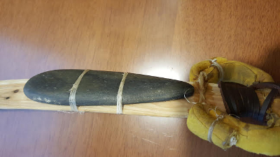
Atlatl counter weight
Finger loops are used sometimes but are not necessary. They are indicative of the basket-maker atlatls of the southwest United States. I have studied the basket-maker spear throwers and like to add features of them into my work.
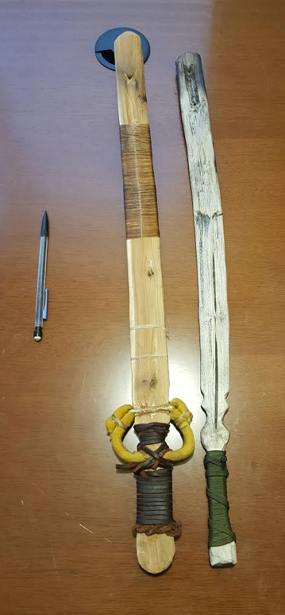
Two completed atlatls (spear throwers)
Atlatl Terminology
Atlatl- is the tool used to throw a dart or spear (also known as a spear thrower)
Spur- is carved into the atlatl itself where the dart connects to the atlatl.
Loading Groove - A U-shaped channel approximately three inches in length and half an inch wide.
Finger Loops - loops made from leather, attached on the top of the handle of the spear thrower.
Dart - a long arrow shaped shaft 5 to 10 feet long, index finger diameter in the middle of the dart.
Shoots - newer growth on certain plants.
Fore Shaft - the fore shaft is a detachable shaft that slides into the business end of the dart, where the point is attached.
Fletching - feathers attached to the back of the dart to provide drag.
How to Make an Atlatl - Step by Step Instructions for a Beginner
The first step in creating an atlatl and dart is to collect the materials. For a high quality kit you must have patience. Proper seasoning is required. Dart and handle pieces must be harvested and stored in a controlled area like a barn or garage. If placed in a heated house, drying can happen too quickly and crack or warp the pieces.
For this demonstration atlatl, I will be using a piece of vine maple. For the dart I will use a piece of beaked hazelnut. When harvesting it is important to practice good harvesting ethics. The rule I like to go by is to harvest one plant within a stand of twenty found, and to never harvest a threatened or endangered species.
When gathering handle material it is nice to find a bit of the trunk or branch that has a slight bend in it. Doing this means you don’t have to bend it yourself. (Only a very slight bend is needed). The diameter of the piece is usually two to three inches.
When collecting pieces for the dart I key in on the species I mentioned above and look for straight long shoots (about seven to eight feet). It is good to cut these extra long because if cracking happens it will happen at the cut end. You can mitigate this by sealing the cut end with wax.
I like to collect at least three shafts so I can bind them together and minimize warping. The size I like is about as thick as my index finger or thumb at the fat end of the shoot.
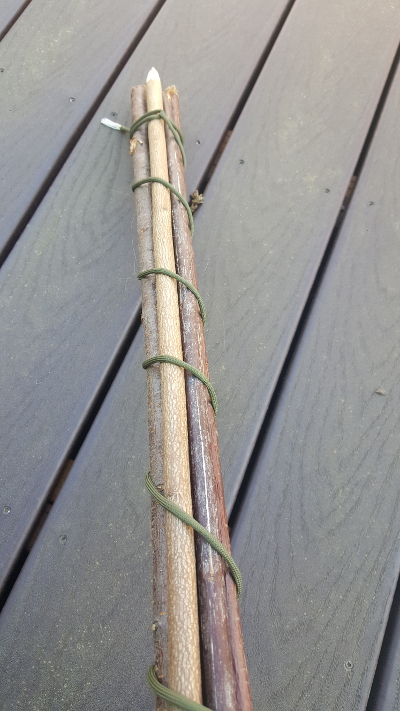
Bundling darts
Second is making the handle. After I have selected the piece I cut it to length and baton it in half with my knife.
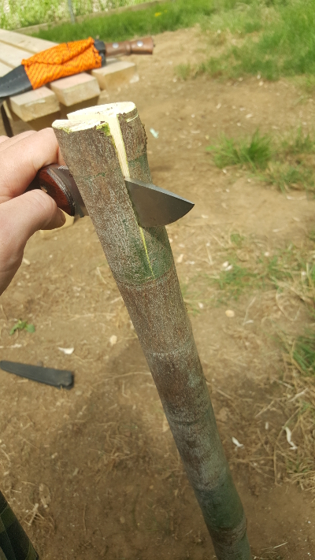
Batoning the handle in half
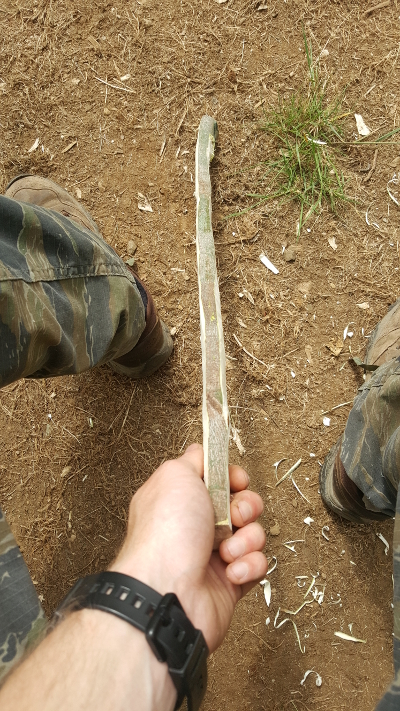
Carving the thickness down to a quarter inch
Then shave the bark side down to a thickness of around a quarter of an inch.
I then carve the handle. I like my handle to be about a half an inch wide and four inches long with a flared out wider section at the very end.
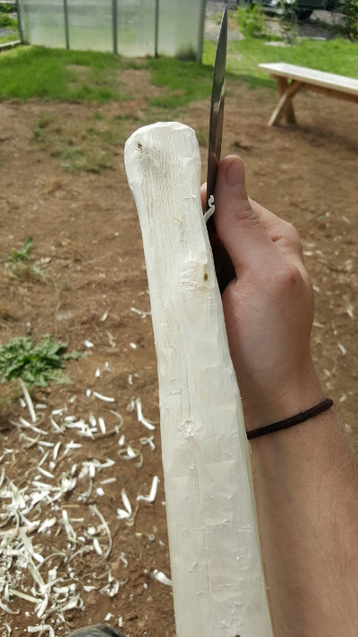
Carving the handle
The loading groove and spur are then carved into the distal end of the handle.
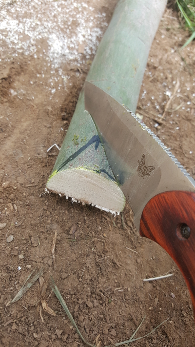
Starting the spur
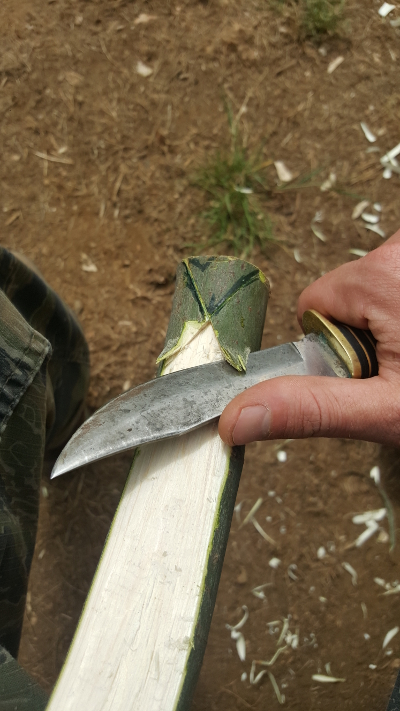
Carving the spur
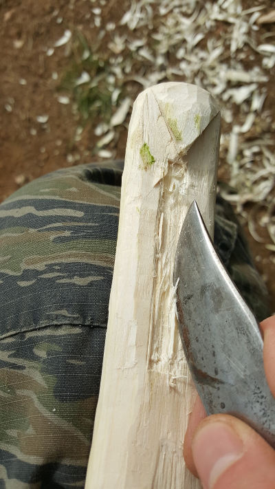
Carving the loading groove
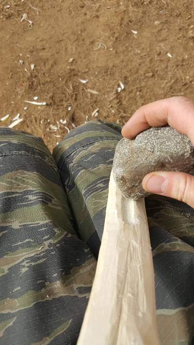
Deepening the loading groove
Then sanding and burnishing takes place. Sand with progressively finer sand paper and steel wool. To burnish the spear thrower, an antler, bone or a smooth rock is used.
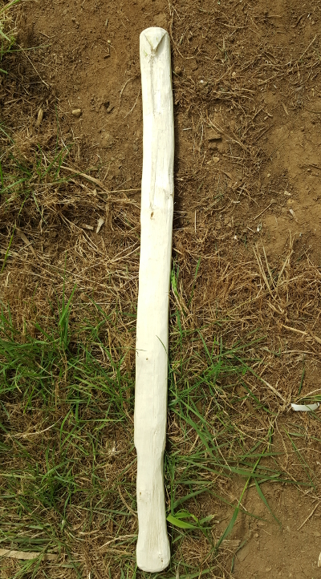
Carved atlatl
Then apply paint or other decorative features.
After the darts have seasoned, I remove one from my bundle and check for cracks, look down the shaft and find the points that need to be straightened
To straighten, I use a fire or a camp stove to apply heat to the crooked section. I slowly pass the shaft over the flame back and forth while rotating. I don’t want to burn the shaft, just heat it up evenly. My gauge to know when it is hot enough is when it is too hot to touch. After the heat is applied straightening needs to happen quickly before it cools down. I focus on one area at a time. Heat it, then bend it opposite the curve, and hold the bend for thirty to forty seconds or until luke-warm.
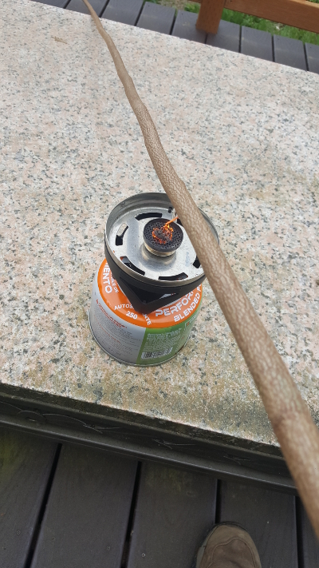
Heating a dart to straighten out the bends
After the shaft is straight it’s time to cut in the bowl shaped nock on the back of the dart. I just use the tip of my knife for this.
Carving the bowl-shaped nock
Next, it is time to attach the point, or drill the hole for a fore shaft. To haft a point I use pitch glue made from a combination of pine tree sap, finely crushed charcoal, and plant fiber. I cut out the nock using a saw, file or a piece of obsidian. It is important to cut the nock so the arrow head fits in tight. After the point has been placed in the nock it is bound with sinew and set to dry.
If using a fore shaft, a hole must be drilled. I will use a power drill for this example, however a knapped stone drill bit or a sharpened piece of bone can also be used.
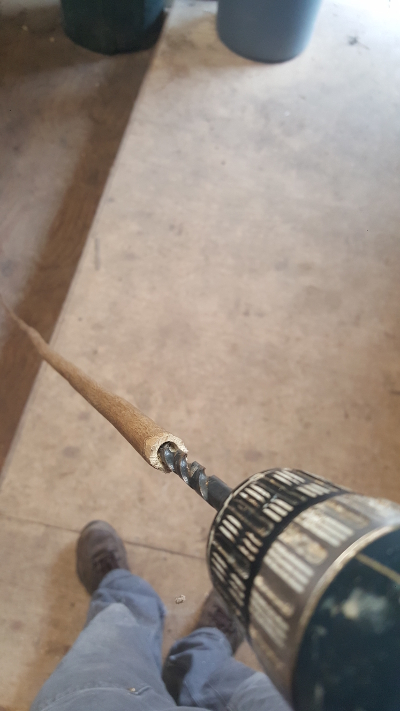
Drilling out a hole for the fore shaft
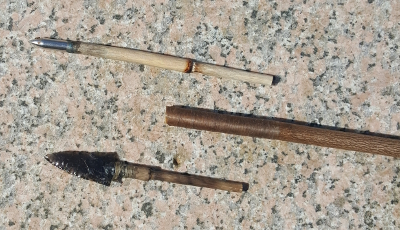
obsidian-tipped and metal-tipped fore shafts
Finally the dart is fletched using turkey wing feathers and sinew.
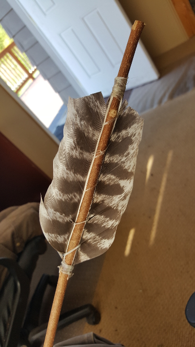
Turkey feather fletching
After the kit has been completed a stone can be attached to the spear thrower handle to make balancing the dart easier.
Conclusion
Now that you’ve built a spear thrower, its time to get out and practice launching darts at an archery target! Start at a very close range of about 15 yards and work your way further back as you build accuracy. I think you’ll be surprised at how far you can fire a projectile with this ingenious ancient survival tool. I hope you enjoy learning and using the atlatl!